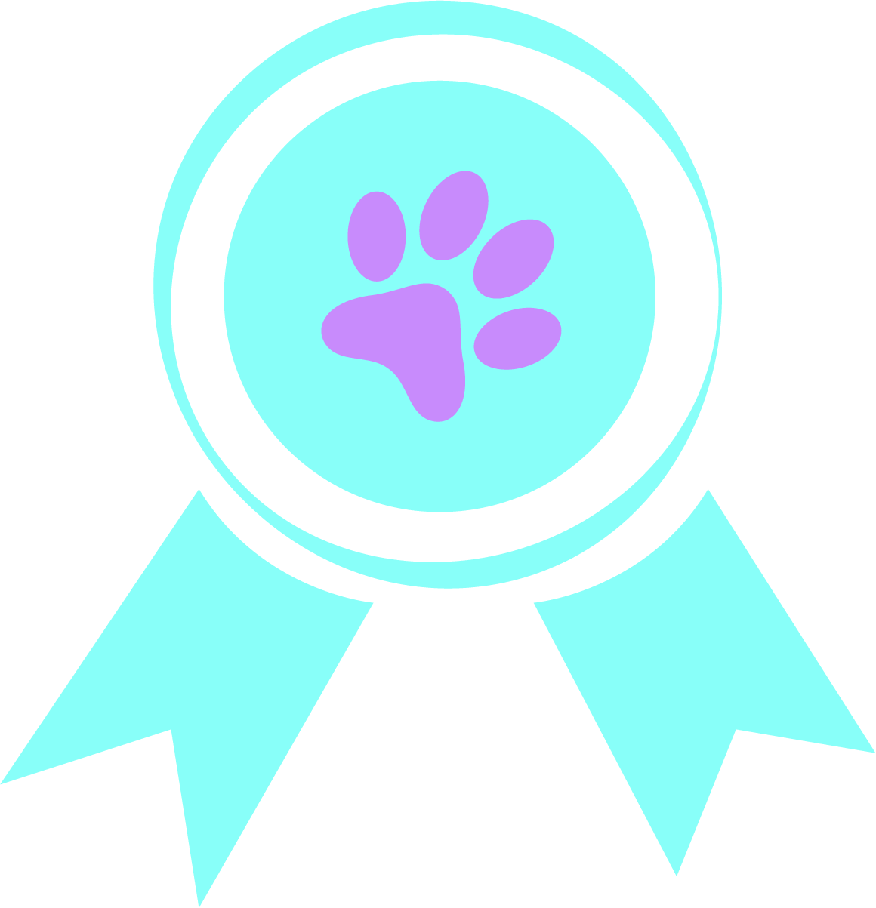
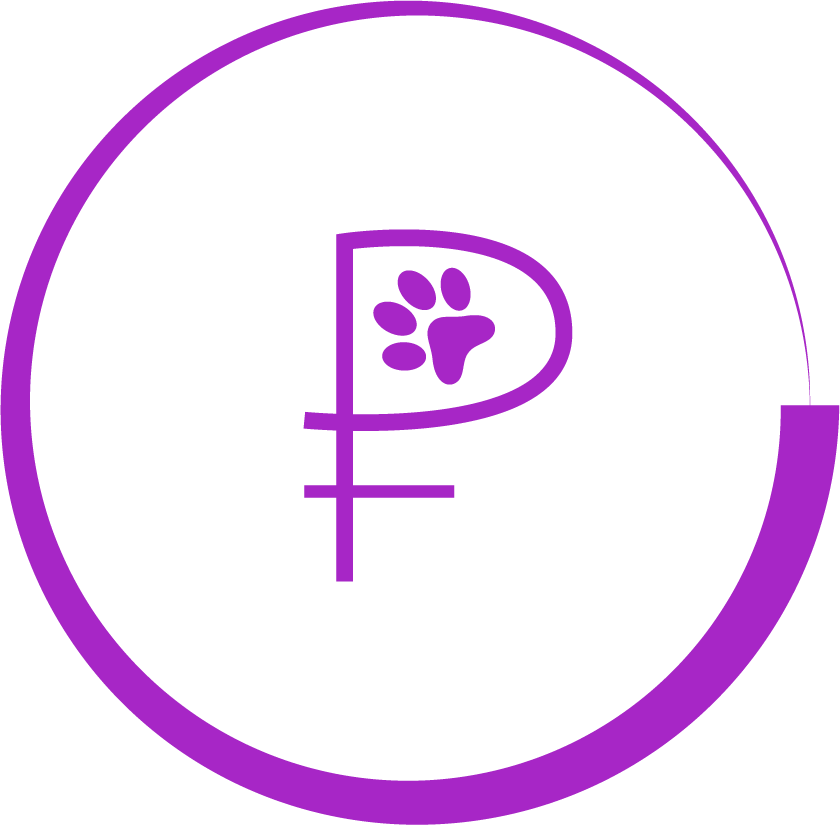
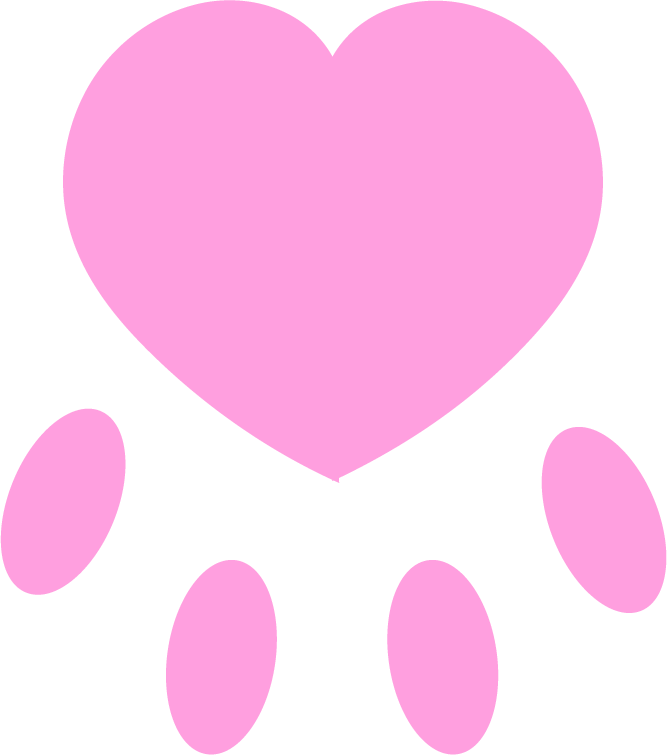
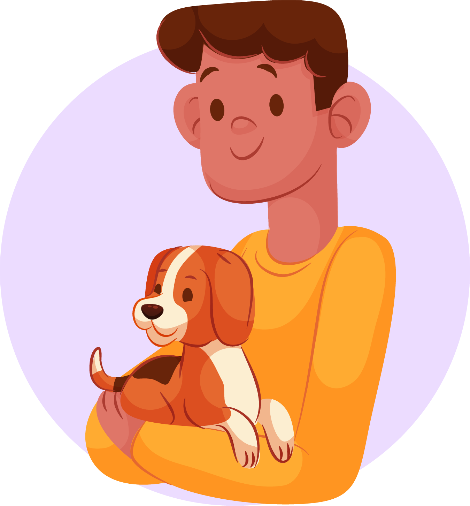
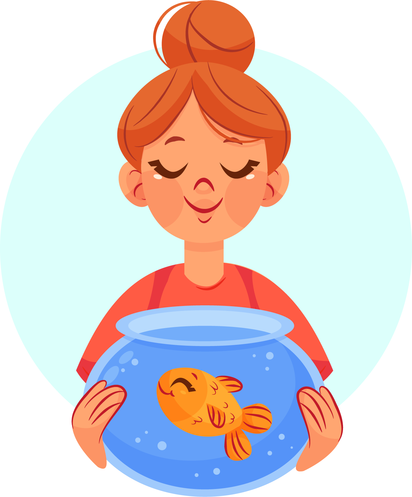
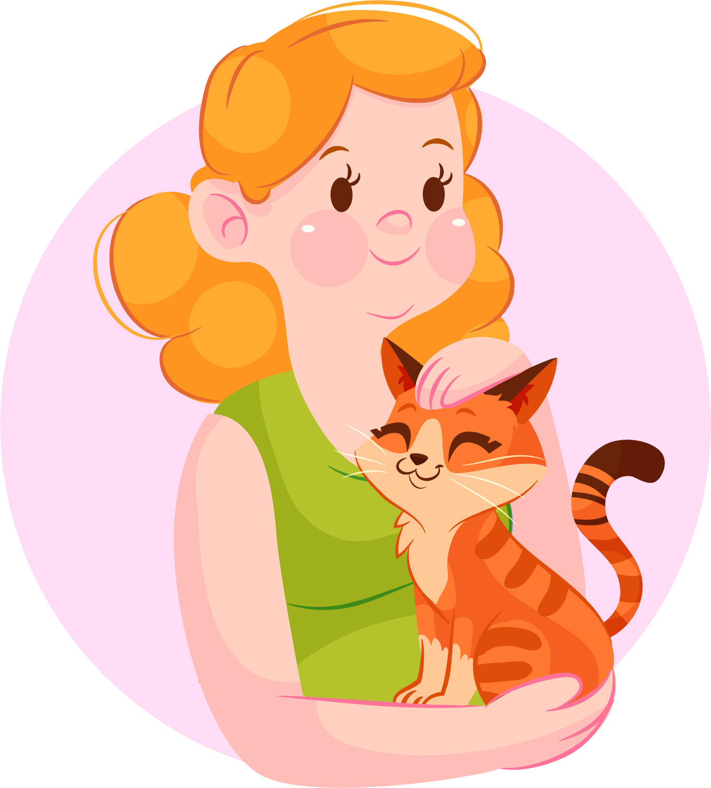

Ноев Ковчег
+7 (916) 777-77-00
Пн-Пт: 9:00 - 20:00
Пн-Пт: 9:00 - 20:00
КТО МЫ?
Ищете качественные зоотовары по доступным ценам? В магазине "Ноев Ковчег" представлен широкий ассортимент кормов, витаминных добавок, игрушек, лежанок и другой специализированной продукции для животных от лучших российских и зарубежных производителей.
За время своего существования мы значительно расширили ассортимент зоомагазина, создали сайт с удобным каталогом, а также заняли лидирующую позицию на столичном рынке. Мы успешно конкурируем с крупнейшими российскими зоомагазинами, предлагая клиентам выгодные расценки и быструю доставку по Москве и в другие города РФ.
Наш коллектив — это команда специалистов, которые любят животных, разбираются во всех тонкостях своего дела, имеют богатый опыт и постоянно стремятся получить новые знания. Мы всегда в курсе актуальных новинок в сфере зооиндустрии, общаемся с профессиональными заводчиками и владельцами ведущих питомников страны, чтобы включить в ассортимент лучшие корма и витаминные комплексы.
За время своего существования мы значительно расширили ассортимент зоомагазина, создали сайт с удобным каталогом, а также заняли лидирующую позицию на столичном рынке. Мы успешно конкурируем с крупнейшими российскими зоомагазинами, предлагая клиентам выгодные расценки и быструю доставку по Москве и в другие города РФ.
Наш коллектив — это команда специалистов, которые любят животных, разбираются во всех тонкостях своего дела, имеют богатый опыт и постоянно стремятся получить новые знания. Мы всегда в курсе актуальных новинок в сфере зооиндустрии, общаемся с профессиональными заводчиками и владельцами ведущих питомников страны, чтобы включить в ассортимент лучшие корма и витаминные комплексы.
НАШИ ПРЕИМУЩЕСТВА

Качество!

Цена!

Надежность!
ОТЗЫВЫ ПОКУПАТЕЛЕЙ
|  | Очень хороший магазин! Купил игрушки для своей собаки - она очень довольна)) Спасибо вам большое! 5 звезд!!!! |
|  | Вежливый персонал и низкие цены! Спасибо магазину, брал там резиновую кость и корм для рыбок. Мне понравилось, очень вкусно!) |
|  | Замечательное место, где вы найдете практически что угодно для своего любимца, рекомендую этот магазин, качественный товар |
О МАГАЗИНЕ:
Ноев Ковчег - это широкое разнообразие товаров для питомцев, живущих с Вами под одной крышей. Мы открыли наш первый магазин еще в 1999 году! И успешно работаем уже 22 года! За это время мы расширили не только ассортимент, но и филиалы по Москве.
Если Вы это читаете, значит в доме живет какое либо животное, и его надо накормить, занять делом, причесать, помыть и прочее. В первую очередь мы подскажем и подберем качественную продукцию от ведущих производителей, сугубо индивидуально подходящую только Вашему питомцу. Обычно перед покупкой всегда возникают вопросы о новинках, качестве, производителях, ценах... Для решения этих задач, изначально нами была поставлена высокая планка по качеству обслуживания и задача удерживать цены на низком уровне. Это удается нам благодаря длительным деловым контактам с прямыми поставщиками товаров для животных от ведущих мировых производителей, а высокий уровень обслуживания — это не только результат длительного опыта работы на этом рынке, но и постоянное изучение потребностей покупателей.
Мы любим животных и знаем толк в подборе оптимального рациона, наш зоомагазин предлагает только качественный корм, получивший сертификат качества, соответственно провереный на отсутствие вредных веществ, на наличие витаминов, минералов и аминокислот, которые необходимы для успешного развития Вашего питомца.
Если Вы это читаете, значит в доме живет какое либо животное, и его надо накормить, занять делом, причесать, помыть и прочее. В первую очередь мы подскажем и подберем качественную продукцию от ведущих производителей, сугубо индивидуально подходящую только Вашему питомцу. Обычно перед покупкой всегда возникают вопросы о новинках, качестве, производителях, ценах... Для решения этих задач, изначально нами была поставлена высокая планка по качеству обслуживания и задача удерживать цены на низком уровне. Это удается нам благодаря длительным деловым контактам с прямыми поставщиками товаров для животных от ведущих мировых производителей, а высокий уровень обслуживания — это не только результат длительного опыта работы на этом рынке, но и постоянное изучение потребностей покупателей.
Мы любим животных и знаем толк в подборе оптимального рациона, наш зоомагазин предлагает только качественный корм, получивший сертификат качества, соответственно провереный на отсутствие вредных веществ, на наличие витаминов, минералов и аминокислот, которые необходимы для успешного развития Вашего питомца.
КОНТАКТЫ:
г. Москва, ул. Гашека, д. 11 корп. 1 |